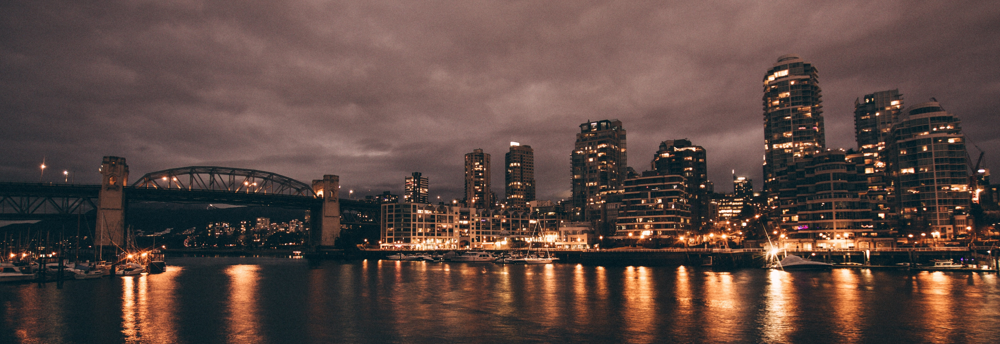
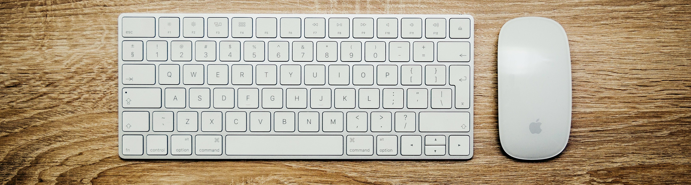
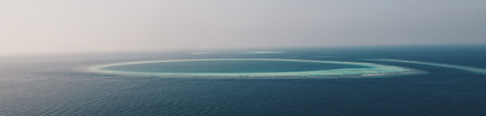
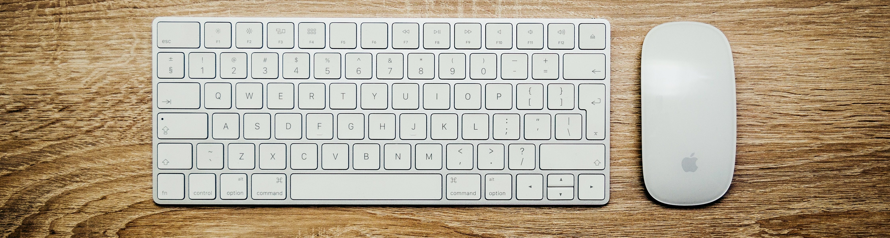
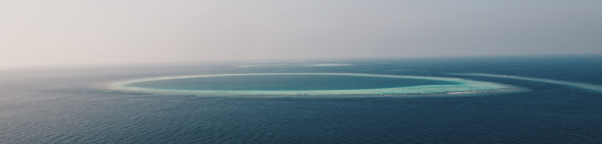
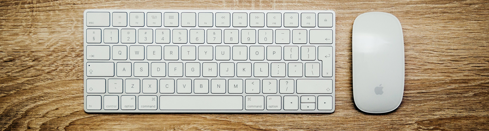
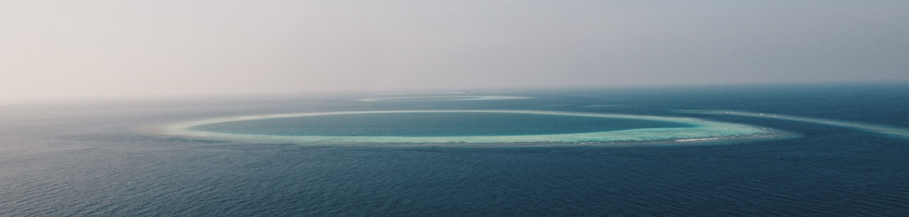
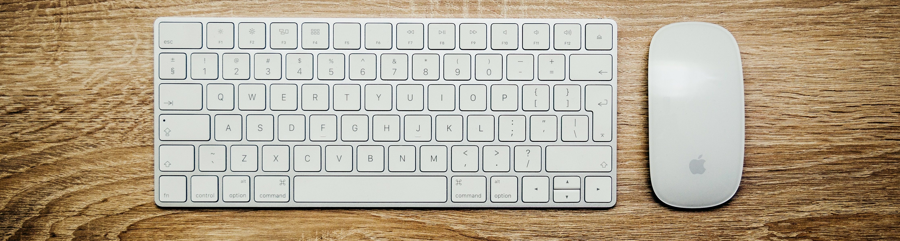
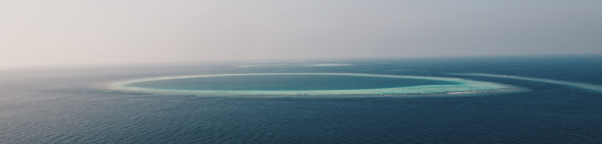

 





- 我的第一篇文章
- Wordpress
- 我的第一篇文章
- Wordpress


博客： 指在博客（Blog或Weblog）的虚拟空间中发布文章等各种形式的过程。 简言之，Blog就是以网络作为载体，简易迅速便捷地发布自己的心得， 及时有效轻松地与他人进行交流，再集丰富多彩的个性化展示于一体的综合性平台。 不同的博客可能使用不同的编码，所以相互之间也不一定兼容。而且，很多博客都提供丰富多彩的模板等功能， 这使得不同的博客各具特色。
WordPress是一种使用PHP语言开发的博客平台，用户可以在支持PHP和MySQL数据库的服务器上架设属于自己的网站。 也可以把 WordPress当作一个内容管理系统（CMS）来使用。 WordPress是一款个人博客系统，并逐步演化成一款内容管理系统软件，它是使用PHP语言和MySQL数据库开发的。 用户可以在支持 PHP 和 MySQL数据库的服务器上使用自己的博客。 WordPress有许多第三方开发的免费模板，安装方式简单易用。不过要做一个自己的模板，则需要你有一定的专业知识。 比如你至少要懂的标准通用标记语言下的一个应用HTML代码、CSS、PHP等相关知识。